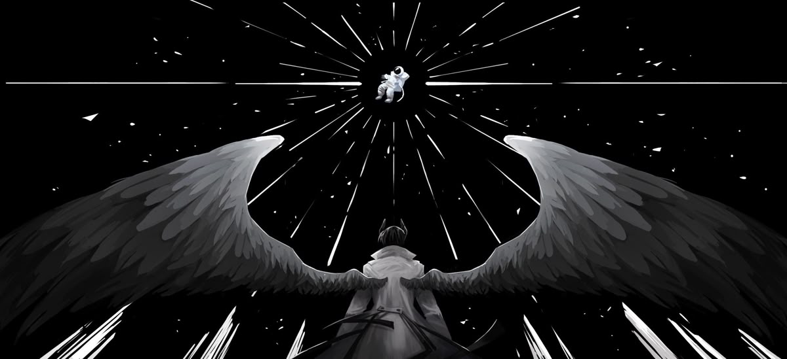

Everything about that night was beautiful.
In the past, palagi nalang ako isolated. I was living a monotonous life, everyday passing by and the ending would always be the same.
But with everything that happened during grade 10, it's been so fun and thrilling, like para bang nakasakay sa rides? and having you by my side,
taking my sorrows away and making me smile. It's the most enjoyable moment.